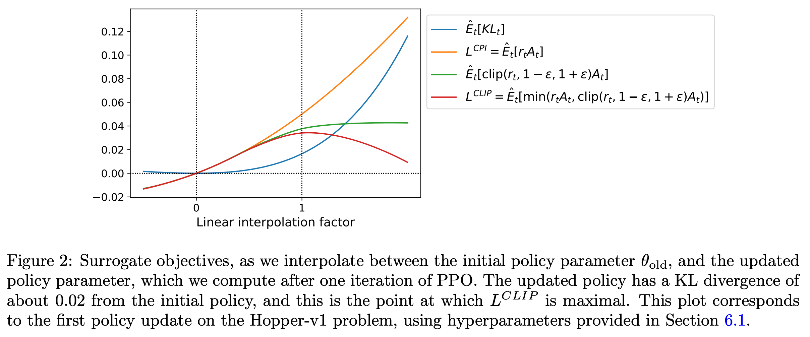
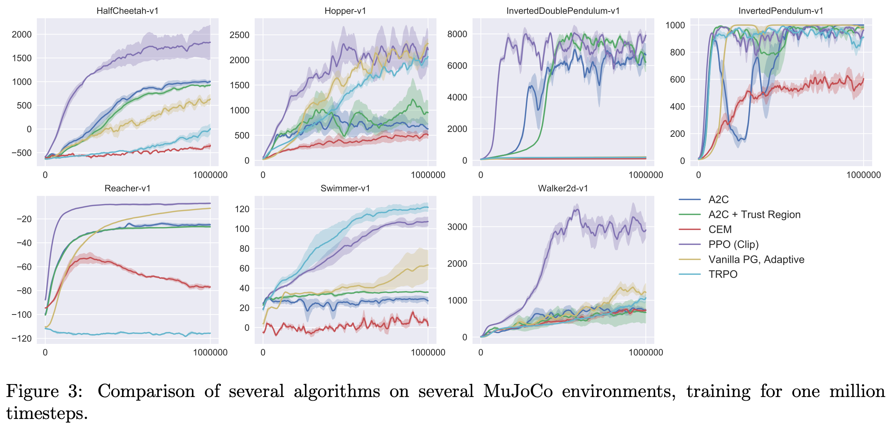

1 2017 PPO
Gemini Overview
- Proximal Policy Optimization (PPO) was specifically designed to bridge the gap between Vanilla Policy Gradient (which is simple but unstable and data-inefficient) and TRPO (which is stable but mathematically complex and incompatible with shared network architectures).
| Feature / Aspect | Vanilla Policy Gradient | Trust Region Policy Optimization (TRPO) | PPO Innovations & Advantages |
|---|---|---|---|
| Objective Function | $L^{PG}(\theta) = E_t[ \log \pi_\theta (a_t|s_t) A_t] $ | \(L^{CPI}(\theta) = E_t[ r_t(\theta) A_t ]\) subject to a hard mean KL constraint (\(\le \delta\)). | Clipped Surrogate Objective (\(L^{CLIP}\)): Pessimistic bound that clips the probability ratio \(r_t(\theta)\) within \([1-\epsilon, 1+\epsilon]\), eliminating incentives for destructively large updates without hard constraints. |
| Optimization Method | First-order (Stochastic Gradient Ascent). | Second-order approximation (Conjugate Gradient method + Fisher Information Matrix computation). | First-order Optimization: Solved using standard gradient ascent (like Adam), making it vastly simpler to implement and computationally cheaper per step. |
| Data / Sample Efficiency | Poor. Performs only one gradient update per data sample; multiple updates on the same trajectory lead to collapse. | Good. Safe, large steps allowed by the trust region, but second-order calculations are slow in wall-clock time. | High (Mini-batch Updates): Safely allows multiple epochs of mini-batch updates on the same batch of collected trajectory data, greatly increasing sample efficiency. |
| Architecture Compatibility | Fully compatible. | Incompatible with shared parameters (Policy & Value networks) or architectures utilizing noise (e.g., Dropout). | Fully Compatible: Seamlessly handles joint architectures. The overall objective cleanly combines the policy loss, value function error (\(L^{VF}\)), and an exploration entropy bonus (\(S\)). |
| Alternative Method | N/A | Uses a fixed KL penalty variant (\(L^{KLPEN}\)), but a single \(\beta\) coefficient fails to work across different tasks. | Adaptive KL Penalty: Alternatively introduces a dynamically scaling penalty coefficient \(\beta\) that adjusts automatically if the KL divergence drifts from a target value (\(d_{\text{targ}}\)). |
| Overall Balance | Simple, but unstable and data-inefficient. | Stable and data-efficient, but mathematically complex and rigid. | Favorable Balance: Strikes the optimal trade-off between sample complexity, implementation simplicity, and wall-clock execution time. |
- Key Takeaway:
- The core innovation of PPO is achieving the reliability and step-size boundaries of TRPO while throwing away the complex second-order math.
- By switching to a first-order optimization with clipping, PPO enables multi-epoch mini-batch training on the same data sample, which drastically boosts sample efficiency and makes it robust enough to use a single neural network for both policy and value predictions.
Abstract
- We propose a new family of policy gradient methods for reinforcement learning, which alternate between sampling data through interaction with the environment, and optimizing a "surrogate" (代理的) objective function using stochastic gradient ascent.
- Whereas standard policy gradient methods perform one gradient update per data sample, we propose a novel objective function that enables multiple epochs of mini-batch updates.
- The new methods, which we call proximal policy optimization (PPO), have some of the benefits of trust region policy optimization (TRPO), but they are
- much simpler to implement,
- more general,
- and have better sample complexity (empirically).
- Our experiments test PPO on a collection of benchmark tasks, including simulated robotic locomotion and Atari game playing, and we show that PPO outperforms other online policy gradient methods, and overall strikes a favorable balance between sample complexity, simplicity, and wall-time.
1 Introduction
-
In recent years, several different approaches have been proposed for reinforcement learning with neural network function approximators.
- The leading contenders are
- deep Q-learning,
- “vanilla” policy gradient methods,
- trust region / natural policy gradient methods
- However, there is room for improvement in developing a method that is scalable (to large models and parallel implementations), data efficient, and robust (i.e., successful on a variety of problems without hyperparameter tuning).
- Q-learning (with function approximation) fails on many simple problems and is poorly understood,
- While DQN works well on game environments like the Arcade Learning Environment with discrete action spaces, it has not been demonstrated to perform well on continuous control benchmarks such as those in OpenAI Gym and described by Duan et al.
- vanilla policy gradient methods have poor data efficiency and robustness;
- trust region policy optimization (TRPO) is relatively complicated, and is not compatible with architectures that include noise (such as dropout) or parameter sharing (between the policy and value function, or with auxiliary tasks).
- Q-learning (with function approximation) fails on many simple problems and is poorly understood,
- The leading contenders are
-
This paper seeks to improve the current state of affairs by introducing an algorithm that attains the data efficiency and reliable performance of TRPO, while using only first-order optimization.
- We propose a novel objective with clipped probability ratios, which forms a pessimistic estimate (i.e., lower bound) of the performance of the policy.
- To optimize policies, we alternate between
- sampling data from the policy
- and performing several epochs of optimization on the sampled data.
-
Our experiments compare the performance of various different versions of the surrogate objective, and find that the version with the clipped probability ratios performs best.
- We also compare PPO to several previous algorithms from the literature.
- On continuous control tasks, it performs better than the algorithms we compare against.
- On Atari, it performs significantly better (in terms of sample complexity) than A2C and similarly to ACER though it is much simpler.
2 Background: Policy Optimization
2.1 Policy Gradient Methods
-
Policy gradient methods work by computing an estimator of the policy gradient and plugging it into a stochastic gradient ascent algorithm.
-
The most commonly used gradient estimator has the form
- where \(\pi_\theta\) is a stochastic policy
-
and \(A_t\) is an estimator of the advantage function at timestep \(t\)
-
Here, the expectation \(E_t[...]\) indicates the empirical average over a finite batch of samples, in an algorithm that alternates between sampling and optimization.
-
Implementations that use automatic differentiation software work by constructing an objective function whose gradient is the policy gradient estimator; the estimator \(g\) is obtained by differentiating the objective
- While it is appealing to perform multiple steps of optimization on this loss \(L^{PG}\) using the same trajectory, doing so is not well-justified, and empirically it often leads to destructively large policy updates (see Section 6.1; results are not shown but were similar or worse than the "no clipping or penalty" setting).
2.2 Trust Region Methods
- In
TRPO, an objective function (the “surrogate” objective) is maximized subject to a constraint on the size of the policy update. Specifically,
- Here, \(\theta_\text{old}\) is the vector of policy parameters before the update.
-
The superscript \(CPI\) refers to Conservative Policy Iteration, where this objective was proposed.
-
This problem can efficiently be approximately solved using the conjugate gradient algorithm, after making a linear approximation to the objective and a quadratic approximation to the constraint.
-
The theory justifying TRPO actually suggests using a penalty instead of a constraint, i.e., solving the unconstrained optimization problem
-
for some coefficient \(\beta\).
-
This follows from the fact that a certain surrogate objective (which computes the max KL over states instead of the mean) forms a lower bound (i.e., a pessimistic bound) on the performance of the policy \(\pi\).
-
TRPO uses a hard constraint rather than a penalty because it is hard to choose a single value of \(\beta\) that performs well across different problems — or even within a single problem, where the the characteristics change over the course of learning.
-
Hence, to achieve our goal of a first-order algorithm that emulates the monotonic improvement of TRPO, experiments show that it is not sufficient to simply choose a fixed penalty coefficient \(\beta\) and optimize the penalized objective Equation with SGD; additional modifications are required.
3 Clipped Surrogate Objective
-
Without a constraint, maximization of \(L^{CPI}\) would lead to an excessively large policy update; hence, we now consider how to modify the objective, to penalize changes to the policy that move \(r_t(\theta)\) away from 1.
-
The main objective we propose is the following:
-
where epsilon is a hyperparameter, say, \(\epsilon = 0.2\)
-
The motivation for this objective is as follows.
- The first term inside the
minis \(L^{CPI}\) - The second term \(r^{clip} A_t\) modifies the surrogate objective by clipping the probability ratio, which removes the incentive for moving \(r_t\) outside of the interval \([1 − \epsilon, 1 + \epsilon]\).
- Finally, we take the minimum of the clipped and unclipped objective, so the final objective is a lower bound (i.e., a pessimistic bound) on the unclipped objective.
- With this scheme, we only ignore the change in probability ratio when it would make the objective improve, and we include it when it makes the objective worse.
- The first term inside the
-
Note that \(L^{CLIP}(\theta) = L^{CPI}(\theta)\) to first order around \(\theta_\text{old}\) (i.e., where \(r = 1\)), however, they become different as \(\theta\) moves away from \(\theta_\text{old}\).
-
Figure 1 plots a single term (i.e., a single \(t\)) in \(L^{CLIP}\); note that the probability ratio \(r\) is clipped at \(1 − \epsilon\) or \(1 + \epsilon\) depending on whether the advantage is positive or negative.
-
Figure 2 provides another source of intuition about the surrogate objective \(L^{CLIP}\).
- It shows how several objectives vary as we interpolate along the policy update direction, obtained by proximal policy optimization (the algorithm we will introduce shortly) on a continuous control problem.
- We can see that \(L^{CLIP}\) is a lower bound on \(L^{CPI}\), with a penalty for having too large of a policy update.

4 Adaptive KL Penalty Coefficient
-
Another approach, which can be used as an alternative to the clipped surrogate objective, or in addition to it,
- is to use a penalty on KL divergence, and to adapt the penalty coefficient so that we achieve some target value of the KL divergence \(d_\text{targ}\) each policy update.
- In our experiments, we found that the KL penalty performed worse than the clipped surrogate objective, however, we’ve included it here because it’s an important baseline.
-
In the simplest instantiation of this algorithm, we perform the following steps in each policy update:
- Using several epochs of minibatch SGD, optimize the KL-penalized objective \(L^{KLPEN}(\theta)\)
- Compute \(d = E_t[ \text{KL} ]\)
- If \(d < d_\text{targ} / 1.5\), \(\beta \gets \beta / 2\)
- If \(d > d_\text{targ} \times 1.5\), \(\beta \gets \beta \times 2\)
-
The updated \(\beta\) is used for the next policy update.
- With this scheme, we occasionally see policy updates where the KL divergence is significantly different from \(d_\text{targ}\), however, these are rare, and \(\beta\) quickly adjusts.
- The parameters \(1.5\) and \(2\) above are chosen heuristically, but the algorithm is not very sensitive to them.
- The initial value of \(\beta\) is a another hyperparameter but is not important in practice because the algorithm quickly adjusts it.
5 Algorithm
-
The surrogate losses from the previous sections can be computed and differentiated with a minor change to a typical policy gradient implementation.
- For implementations that use automatic differentiation, one simply constructs the loss \(L^{CLIP}\) or \(L^{KLPEN}\) instead of \(L^{PG}\), and one performs multiple steps of stochastic gradient ascent on this objective.
-
Most techniques for computing variance-reduced advantage-function estimators make use a learned state-value function \(V(s)\); for example, generalized advantage estimation, or the finite-horizon estimators.
-
If using a neural network architecture that shares parameters between the policy and value function, we must use a loss function that combines the policy surrogate and a value function error term.
- This objective can further be augmented by adding an entropy bonus to ensure sufficient exploration, as suggested in past work
- Combining these terms, we obtain the following objective, which is (approximately) maximized each iteration:
- where \(c_1, c_2\) are coefficients,
- and \(S\) denotes an entropy bonus,
- One style of policy gradient implementation, popularized in [Mni+16] and well-suited for use with recurrent neural networks, runs the policy for \(T\) timesteps (where \(T\) is much less than the episode length), and uses the collected samples for an update.
- This style requires an advantage estimator that does not look beyond timestep \(T\).
- The estimator used by [Mni+16] is
-
where \(t\) specifies the time index in \([0, T]\), within a given length-\(T\) trajectory segment.
-
Generalizing this choice, we can use a truncated version of Generalized Advantage Estimation, which reduces to equation above when \(\lambda = 1\):
- A proximal policy optimization (PPO) algorithm that uses fixed-length trajectory segments is shown below.
- Each iteration, each of \(N\) (parallel) actors collect \(T\) timesteps of data.
- Then we construct the surrogate loss on these \(NT\) timesteps of data, and optimize it with mini-batch Adam, for \(K\) epochs.
- Algorithm 1 PPO, Actor-Critic Style
- for iteration = 1, 2, . . . do
- for actor = 1, 2, . . . , N do
- Run policy \(\pi_{\theta_\text{old}}\) in environment for \(T\) timesteps
- Compute advantage estimates \(A_1, ..., A_T\)
- Optimize surrogate \(L\) wrt \(\theta\), with \(K\) epochs and minibatch size \(M \le NT\)
- \(\theta_\text{old} \gets \theta\)
- for actor = 1, 2, . . . , N do
- for iteration = 1, 2, . . . do
6 Experiments
6.1 Comparison of Surrogate Objectives
-
First, we compare several different surrogate objectives under different hyperparameters. Here, we compare the surrogate objective \(L^{CLIP}\) to several natural variations and ablated versions.
-
For the KL penalty, one can either use a fixed penalty coefficient \(\beta\) or an adaptive coefficient as described in Section 4 using target KL value \(d_\text{targ}\).
- Note that we also tried clipping in log space, but found the performance to be no better.
-
Because we are searching over hyperparameters for each algorithm variant, we chose a computationally cheap benchmark to test the algorithms on.
- Namely, we used 7 simulated robotics tasks implemented in OpenAI Gym, which use the
MuJoCophysics engine. - We do one million timesteps of training on each one.
- Besides the hyperparameters used for clipping (\(\epsilon\)) and the KL penalty (\(\beta, d_\text{targ}\)), which we search over, the other hyperparameters are provided in in Table 3.
- Namely, we used 7 simulated robotics tasks implemented in OpenAI Gym, which use the
-
To represent the policy, we used a fully-connected MLP with two hidden layers of \(64\) units, and
tanhnonlinearities, outputting the mean of a Gaussian distribution, with variable standard deviations, following [Sch+15b; Dua+16].- We don’t share parameters between the policy and value function (so coefficient \(c_1\) is irrelevant), and we don’t use an entropy bonus.
-
Each algorithm was run on all 7 environments, with 3 random seeds on each.
- We scored each run of the algorithm by computing the average total reward of the last 100 episodes.
- We shifted and scaled the scores for each environment so that the random policy gave a score of \(0\) and the best result was set to \(1\), and averaged over 21 runs to produce a single scalar for each algorithm setting.
-
The results are shown in Table 1.
- Note that the score is negative for the setting without clipping or penalties, because for one environment (half cheetah) it leads to a very negative score, which is worse than the initial random policy.
6.2 Comparison to Other Algorithms in the Continuous Domain
- Next, we compare PPO (with the “clipped” surrogate objective from Section 3) to several other methods from the literature, which are considered to be effective for continuous problems.
- We compared against tuned implementations of the following algorithms:
- Trust Region Policy Optimization [Sch+15b],
- cross-entropy method (CEM) [SL06],
- Vanilla Policy Gradient with adaptive step-size
- A2C [Mni+16],
- A2C with trust region [Wan+16].
- A2C stands for advantage actor critic, and is a synchronous version of A3C, which we found to have the same or better performance than the asynchronous version.
- For PPO, we used the hyperparameters from the previous section, with \(\epsilon = 0.2\).
- We see that PPO outperforms the previous methods on almost all the continuous control environments.
- We compared against tuned implementations of the following algorithms:

6.3 Showcase in the Continuous Domain: Humanoid Running and Steering
- To showcase the performance of PPO on high-dimensional continuous control problems, we train on a set of problems involving a 3D humanoid, where the robot must
- run, steer, and get up off the ground,
- possibly while being pelted (连续攻击) by cubes.
- The three tasks we test on are
RoboschoolHumanoid: forward locomotion only,RoboschoolHumanoidFlagrun: position of target is randomly varied every 200 timesteps or whenever the goal is reached,RoboschoolHumanoidFlagrunHarder, where the robot is pelted by cubes and needs to get up off the ground.
-
See Figure 5 for still frames of a learned policy, and Figure 4 for learning curves on the three tasks.
-
Hyperparameters are provided in Table 4.
- In concurrent work, Heess et al. used the adaptive KL variant of PPO (Section 4) to learn locomotion policies for 3D robots.
6.4 Comparison to Other Algorithms on the Atari Domain
- We also ran PPO on the Arcade Learning Environment benchmark and compared against well-tuned implementations of A2C and ACER.
- For all three algorithms, we used the same policy network architecture as used in [Mni+16].
- The hyperparameters for PPO are provided in Table 5.
- For the other two algorithms, we used hyperparameters that were tuned to maximize performance on this benchmark.
- A table of results and learning curves for all 49 games is provided in Appendix B.
- We consider the following two scoring metrics:
- average reward per episode over entire training period (which favors fast learning), and
- average reward per episode over last 100 episodes of training (which favors final performance).
- Table 2 shows the number of games “won” by each algorithm, where we compute the victor by averaging the scoring metric across three trials.
| A2C | ACER | PPO | Tie | |
|---|---|---|---|---|
| (1) avg. episode reward over all of training | 1 | 18 | 30 | 0 |
| (2) avg. episode reward over last 100 episodes | 1 | 28 | 19 | 1 |
7 Conclusion
- We have introduced proximal policy optimization, a family of policy optimization methods that use multiple epochs of stochastic gradient ascent to perform each policy update.
- These methods have the stability and reliability of trust-region methods but are much simpler to implement, requiring only few lines of code change to a vanilla policy gradient implementation, applicable in more general settings (for example, when using a joint architecture for the policy and value function), and have better overall performance.